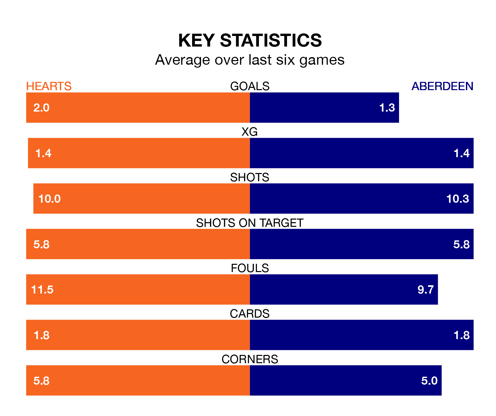

Hearts are on an excellent run ahead of hosting Aberdeen at Tynecastle Park on Saturday, with 16 points collected from their last six games.
Hearts have picked up five wins and one draw in their last six Premiership games, and face an Aberdeen side whose last six games have brought three wins and one draw.
With 23 goals in 19 games so far this season, Aberdeen are scoring at below the league average rate with 1.2 goals per game. And they are conceding more than average, letting in 30 goals at a rate of 1.6 per game.
Hearts are also below average scorers, with 1.2 goals per game, compared to a league average of 1.3. They have conceded 0.9 goals per game.
In Lawrence Shankland, the home team have the league's sharpest shooter so far this season. He has notched 13 goals in 22 appearances.
His goal rate of one every 152 minutes is slightly quicker than that of Bojan Miovski, the visitors' top scorer with a goal every 162 minutes, and a total of 10 goals in 19 games.
In the last 10 years, Hearts and Aberdeen have played each other on 29 occasions. Hearts won nine of them, Aberdeen 13, and they drew seven times.
On average, Hearts scored 1.1 goals and Aberdeen 1.2 in those matches.
Their last meeting was on December 9, when Aberdeen won 2-1 at home.
Hearts are third in the table after 22 games, of which they have won 12 and drawn three, earning 39 points.
Aberdeen are four places behind Hearts in seventh, with six wins and five draws putting them on 23 points.
Hearts's last match was on Tuesday, a 3-2 win against Dundee, with Calem Nieuwenhof, Dexter Lembikisa and Yutaro Oda getting the goals for Hearts.
Aberdeen drew 1-1 with St. Johnstone last time out, on Wednesday, with Miovski on the scoresheet.
Saturday's match will be refereed by Kevin Clancy, who has taken charge of 10 Premiership games so far this season, issuing one red card and booking 38 players. He has awarded four penalties.
The last Hearts game Clancy refereed was a 2-0 away win against Celtic on December 16. His last Aberdeen match was their 2-0 loss away at Kilmarnock on October 29.
Updated: 08:51 (UTC), 25/01/24